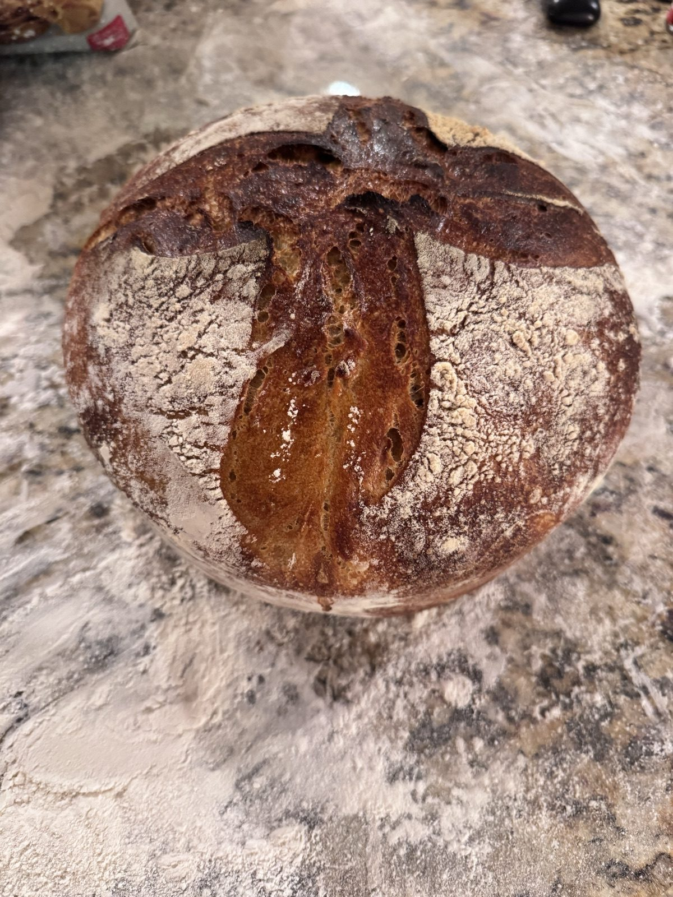

Country Levain
SignatureOur daily loaf. Bread flour and a touch of whole wheat give an open, custardy crumb under a deeply caramelized crust. Versatile, balanced, and never boring.
- Ingredients:
- bread flour, whole wheat, water, levain, sea salt
Full $16
·
Half $9
Order →